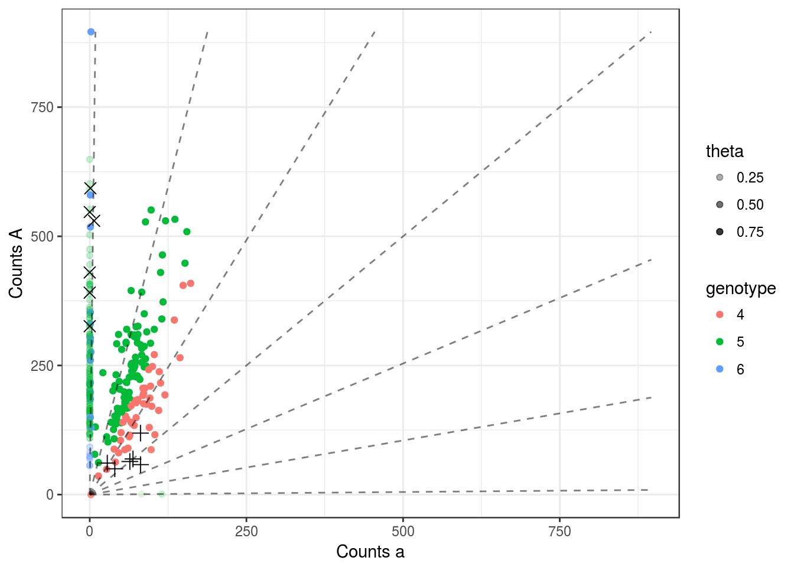
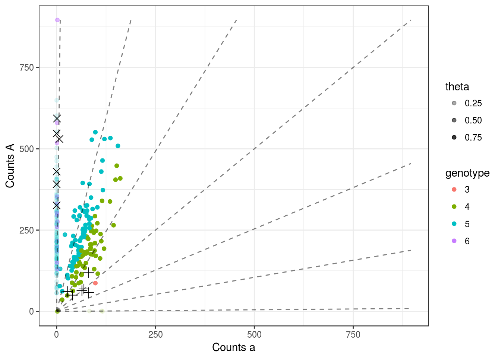
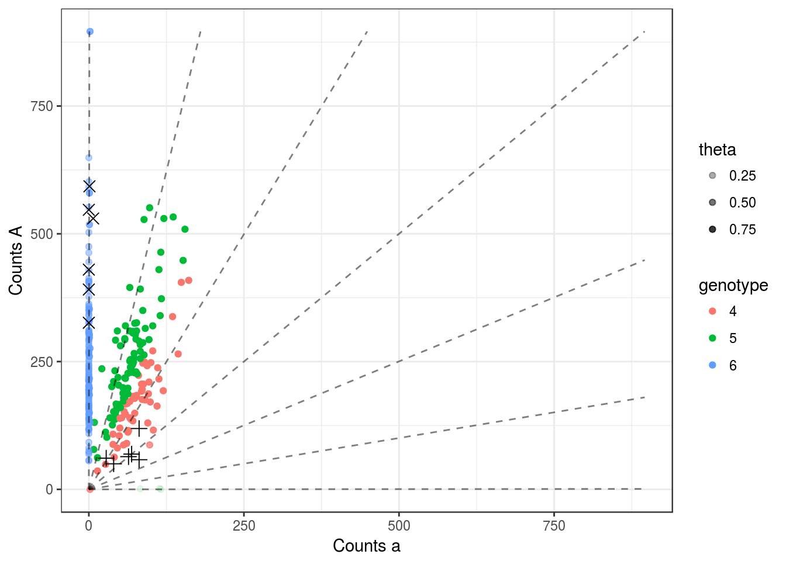

Last updated: 2016-11-22
Code version: 131c257aef9a0bdd91365390a2a51ccf7f3f60a4
Here, I try out overdispersed updog.
library(updog)
set.seed(483)
load("../data/subset_David.Rdata")
dat <- subset_david
lastp <- 12 ## number of final rows that are parents
## Run `updog`
cmat <- dat[[10]]
p1dat <- cmat[(nrow(cmat) - lastp + 1):(nrow(cmat) - lastp / 2), ]
p2dat <- cmat[(nrow(cmat) - lastp / 2 + 1):nrow(cmat), ]
odat <- cmat[1:(nrow(cmat) - lastp), ]
p1counts <- p1dat[, 1]
p1size <- rowSums(p1dat)
p2counts <- p2dat[, 1]
p2size <- rowSums(p2dat)
ocounts <- odat[, 1]
osize <- rowSums(odat)
ploidy <- 6This one is a little weird. There are so many observations that have almost all A, but they are mostly uncertain, with a lot of them having the highest posterior probability of having just 5 A.
uout1 <- updog(ocounts = ocounts, osize = osize, ploidy = ploidy,
update_rho = TRUE, overdispersion = TRUE,
update_geno = TRUE, update_outlier = TRUE, update_pi = TRUE,
seq_error = 0.01)
pl <- plot_geno(ocounts = ocounts, osize = osize, ploidy = ploidy, p1counts = p1counts, p1size = p1size,
p2counts = p2counts, p2size = p2size, col = uout1$ogeno, theta = uout1$prob_ok, seq_error = 0.01)
A few things, first the parental genotypes estimated by updog are very different than those by the binomial model. The binomial model says the parental genotypes are 3 and 6
bin_post(ncounts = p1counts, ssize = p1size, prior = rep(1 / (ploidy + 1), ploidy + 1)) aaaaaa Aaaaaa AAaaaa AAAaaa AAAAaa AAAAAa
0.000e+00 3.697e-115 1.768e-28 1.000e+00 2.139e-11 8.276e-76
AAAAAA
0.000e+00 bin_post(ncounts = p2counts, ssize = p2size, prior = rep(1 / (ploidy + 1), ploidy + 1)) aaaaaa Aaaaaa AAaaaa AAAaaa AAAAaa AAAAAa
0.000e+00 0.000e+00 0.000e+00 0.000e+00 0.000e+00 2.121e-211
AAAAAA
1.000e+00 while updog says the parental genotypes are 5 and 5. If we use the parental data to influence our prior then we get
uout2 <- updog(ocounts = ocounts, osize = osize, ploidy = ploidy,
p1counts = p1counts, p1size = p1size,
p2counts = p2counts, p2size = p2size,
update_rho = TRUE, overdispersion = TRUE,
update_geno = TRUE, update_outlier = TRUE, update_pi = TRUE)
pl <- plot_geno(ocounts = ocounts, osize = osize, ploidy = ploidy, p1counts = p1counts, p1size = p1size,
p2counts = p2counts, p2size = p2size, col = uout2$ogeno, theta = uout2$prob_ok, seq_error = 0.01) We observe parental genotypes of 3 and 6. But we still see a lot of weird things. For example, most of the observations that have all A’s are blue and with small thetas. But if the true parental genotypes were 6 and 3 then the probability of observing an all A child (not in counts but in genotype) would only be 0.05. But actually 0.4396 of the observations have more than 99.9 percent of A. So there is naturally a large discrepancy between the parental and offspring counts that our model is picking up.
I also think sequencing error rate is huge here. For example, if I lower it just a little bit then I get
uout_lessseq <- updog(ocounts = ocounts, osize = osize, ploidy = ploidy,
update_rho = TRUE, overdispersion = TRUE,
update_geno = TRUE, update_outlier = TRUE, update_pi = TRUE,
seq_error = 0.001)
pl <- plot_geno(ocounts = ocounts, osize = osize, ploidy = ploidy, p1counts = p1counts, p1size = p1size,
p2counts = p2counts, p2size = p2size, col = uout_lessseq$ogeno,
theta = uout_lessseq$prob_ok, seq_error = 0.001) which seem to give us the exact results we intuitively want.
sessionInfo()R version 3.3.2 (2016-10-31)
Platform: x86_64-pc-linux-gnu (64-bit)
Running under: Ubuntu 14.04.5 LTS
locale:
[1] LC_CTYPE=en_US.UTF-8 LC_NUMERIC=C
[3] LC_TIME=en_US.UTF-8 LC_COLLATE=en_US.UTF-8
[5] LC_MONETARY=en_US.UTF-8 LC_MESSAGES=en_US.UTF-8
[7] LC_PAPER=en_US.UTF-8 LC_NAME=C
[9] LC_ADDRESS=C LC_TELEPHONE=C
[11] LC_MEASUREMENT=en_US.UTF-8 LC_IDENTIFICATION=C
attached base packages:
[1] stats graphics grDevices utils datasets methods base
other attached packages:
[1] updog_0.1.0 knitr_1.15
loaded via a namespace (and not attached):
[1] magrittr_1.5 assertthat_0.1 tools_3.3.2 htmltools_0.3.5
[5] yaml_2.1.14 tibble_1.2 Rcpp_0.12.7 stringi_1.1.2
[9] rmarkdown_1.1 stringr_1.1.0 digest_0.6.10 evaluate_0.10